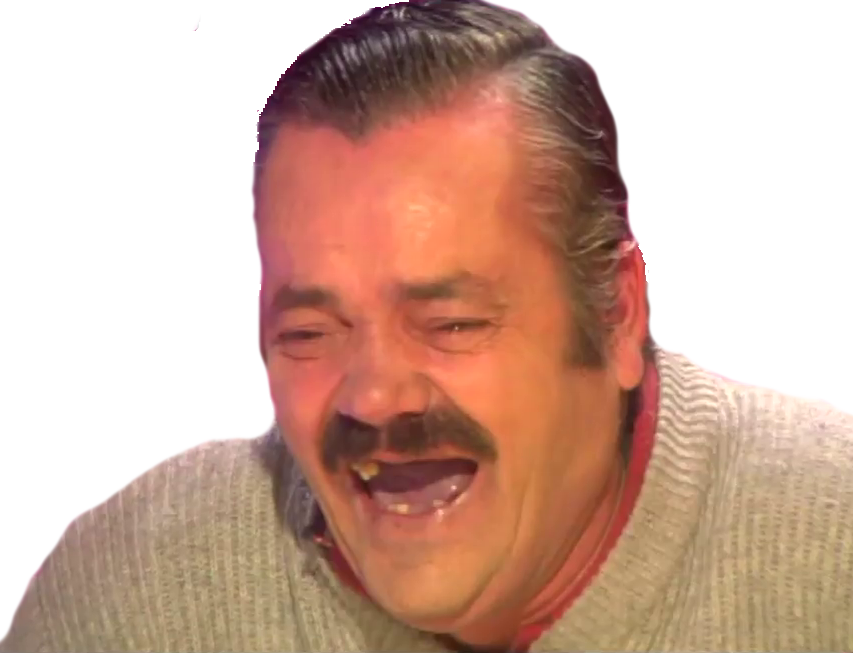

Хороший анекдот способен на многое, если он нашёл правильную
аудиторию. Поэтому учитывайте свою аудиторию. Все аспекты шутки от
содержания до продолжительности должны соответствовать целевой аудитории.
Юмор двадцатилетних студентов вряд ли рассмешит вашего семидесятилетнего дядю
(если он вообще смеется).

Каждый человек индивидуален, поэтому жестких правил не существует.
При этом все же нужно учитывать некоторые аспекты, если вы не знакомы со слушателями лично:
пожилым людям не по душе грубые шутки; лучше не рассказывать женоненавистнические истории в присутствии женщин;
люди обычно не любят шутки о своей расовой или этнической принадлежности;
узкоспециальные шутки (например, по мотивам старых фильмов, научных знаний или Иру-Ваню)
оценят только люди, которые обладают соответствующими знаниями.
Чем лучше вы знаете свою аудиторию, тем более подходящие шутки сможете выбрать.